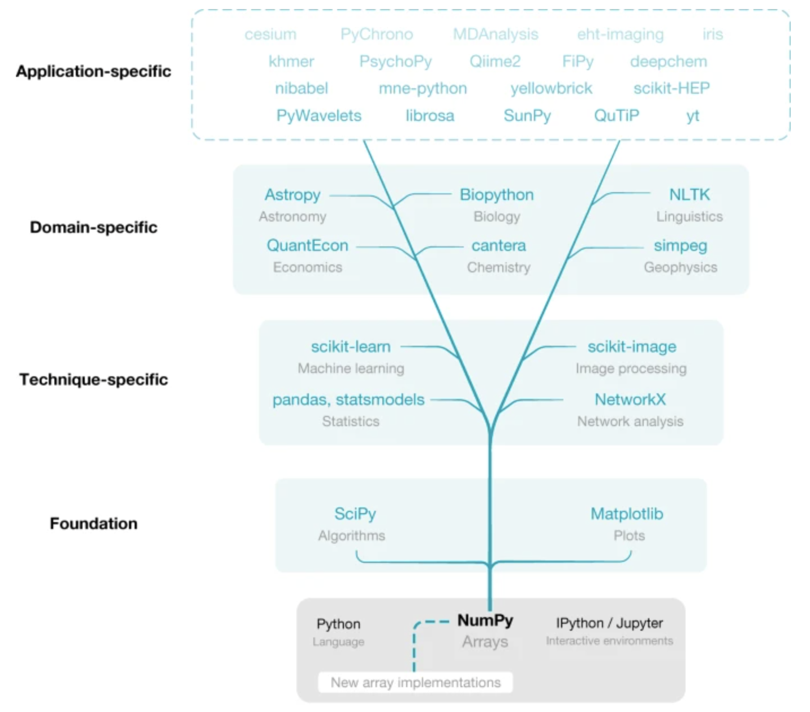

Introduction to NumPy
Objectives
What is NumPy and why it’s important for bioinformatics
Performance advantages over Python lists
Foundation for other scientific libraries
Instructor note
Teaching : 15 min
Demo: 5 min
Exercise : 0 min (exercise would be skipped during live sessions)
What is numpy?
NumPyis short for “Numerical Python”Core python library for scientific computing
Useful for processing large quantities of same-type data
Foundation for:
Data manipulation, analysis and visualization libraries (
Pandas,Matplotlib,scipy)Machine learning libraries (
scikit-learn,TensorFlow,PyTorch)
NumPy operations are written in compiled C, significantly speeding up mathematical operations

Why NumPy is Essential for Bioinformatics
Bioinformatics involves processing and analyzing vast amounts of biological data, from genomic sequences to protein structures
NumPy’s efficient N-dimensional arrays allow for fast and memory-efficient processing of these large datasets
C-optimized operations: NumPy’s compiled C backend makes processing of big-data feasible without having C programming knowledge
Reduced memory footprint help optimize the big-data processing: Accelerating Key Bioinformatics Tasks 100-fold by Improving Memory Access
Run statistical analysis/operations using Biological Data effectively (low barrier to entry)
Numpy is essential for Python-based machine learning applications on biological datasets
Note
In essence, NumPy bridges the gap between high-level Python programming and the performance requirements of modern bioinformatics, making it possible to analyze the increasingly large datasets generated by modern biological research techniques.
NumPy Arrays vs Python Lists
Lists are data structures used to store collections of elements
NumPy arrays enforce a single data type for all elements
Benefits of NumPy arrays:
Homogeneity removes need for type checking during operations
Contiguous memory allocation (faster than Python’s scattered storage)
Vectorization allows operations on entire arrays without loops
Rich set of mathematical functions and operations

Creating NumPy Arrays
Demo
1D Arrays from lists
import numpy as np
# Create from list
py_list = list(range(1,5))
np_array = np.array(py_list)
print(np_array) # Output: array([1, 2, 3, 4])
2D Arrays (matrices)
# Create a 2D array
rows, cols = 3, 4
list_of_list = [[j for j in range(cols)] for i in range(rows)]
np_array = np.array(list_of_list)
print(np_array)
Output:
array([[0, 1, 2, 3],
[0, 1, 2, 3],
[0, 1, 2, 3]])
Creating arrays from scratch
Demo
# Range of values
np.arange(1, 10, 2) # Output: array([1, 3, 5, 7, 9])
# Arrays of zeros
np.zeros((2, 2)) # Output: array([[0., 0.], [0., 0.]])
# Arrays of ones
np.ones(5) # Output: array([1., 1., 1., 1., 1.])
# Random arrays
np.random.random((2, 2)) # Random values between 0 and 1
Examining numpy array structure and storage
NumPy arrays come with several attributes that provide important information about their structure and data storage.
Attribute |
Description |
Example |
Purpose |
|---|---|---|---|
|
A tuple of integers representing the size of each dimension of the array |
(3, 4) (2D array with 3 rows and 4 columns) |
Understands the layout and number of elements within the array. |
|
An integer indicating the dimensionality of the array (number of dimensions) |
2 (for a 2D array), 1 (for a vector) |
Clarifies how many axes are used to access elements. |
|
An integer representing the total number of elements within the array |
12 (for a 2D array with shape (3, 4)) |
Provides a quick way to determine the total number of elements. |
Exercise: NumPy Array Creation Exercises
Exercise 1: Creating Arrays from Scratch
In this exercise, you’ll practice creating NumPy arrays using different built-in functions.
Tasks:
Create a 1D array containing integers from 5 to 50 with a step size of 5 using
np.arange().Create an array of 8 evenly spaced values between 0 and 1 (inclusive) using
np.linspace().Create an array of 10 random integers between 1 and 100 using
np.random.randint().Create an array of shape (3,3) filled with the value 3.14 using
np.full().
Expected Output:
# After task 1
array([ 5, 10, 15, 20, 25, 30, 35, 40, 45, 50])
# After task 2
array([0. , 0.14285714, 0.28571429, 0.42857143, 0.57142857,
0.71428571, 0.85714286, 1. ])
# After task 3 (your values will differ due to randomness)
array([42, 67, 89, 14, 53, 12, 95, 78, 37, 51])
# After task 4
array([[3.14, 3.14, 3.14],
[3.14, 3.14, 3.14],
[3.14, 3.14, 3.14]])
Test
shape,ndim,sizeattributes of the Numpy arrays created in above tasks
Solution
print("Exercise 1: Creating Arrays from Scratch")
# Task 1: Create array from 5 to 50 with step size of 5
array1 = np.arange(5, 51, 5)
print("Task 1 - Array with integers from 5 to 50, step 5:")
print(array1)
print()
# Task 2: Create array of 8 evenly spaced values between 0 and 1
array2 = np.linspace(0, 1, 8)
print("Task 2 - 8 evenly spaced values between 0 and 1:")
print(array2)
print()
# Task 3: Create array of 10 random integers between 1 and 100
array3 = np.random.randint(1, 101, 10)
print("Task 3 - 10 random integers between 1 and 100:")
print(array3)
print()
# Task 4: Create 3x3 array filled with 3.14
array4 = np.full((3, 3), 3.14)
print("Task 4 - 3x3 array filled with 3.14:")
print(array4)
print("\n" + "-"*50 + "\n")